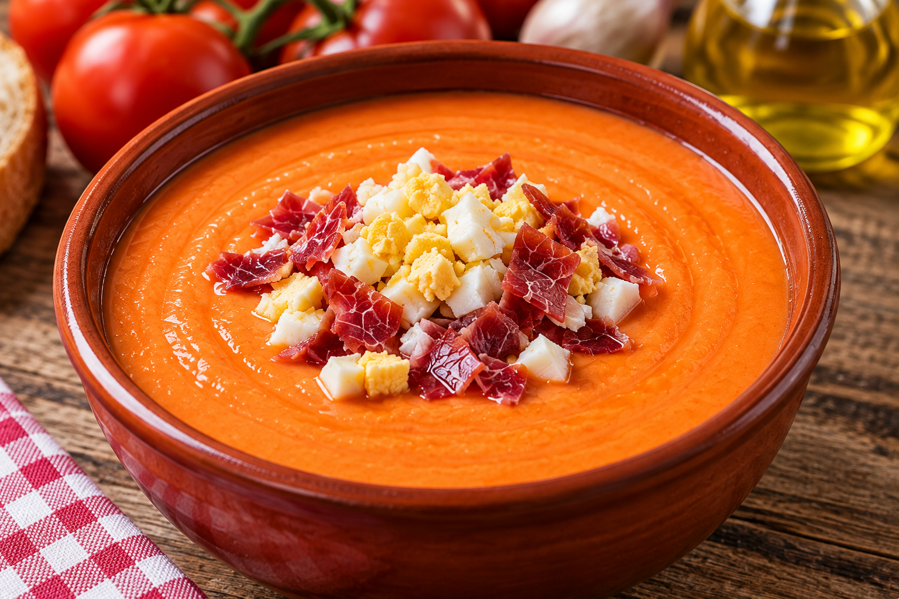

Salmorejo Cordobés
Ingredientes
- 1 kg de tomates maduros
- 200 g de pan
- 100 ml de aceite de oliva virgen extra
- 1 diente de ajo
- Sal
- Huevo cocido para decorar
- Jamón serrano para decorar

Elaboración
- Lavar los tomates y cortarlos en trozos.
- Añadir los tomates, el pan, el ajo y la sal a un recipiente.
- Triturar los ingredientes hasta obtener una crema homogénea.
- Añadir poco a poco el aceite de oliva mientras se sigue triturando.
- Dejar enfriar el salmorejo en el frigorífico.
- Servir frío y decorar con huevo cocido y jamón serrano.
Descargar receta en PDF